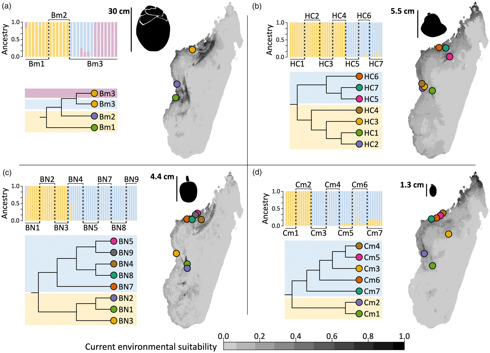
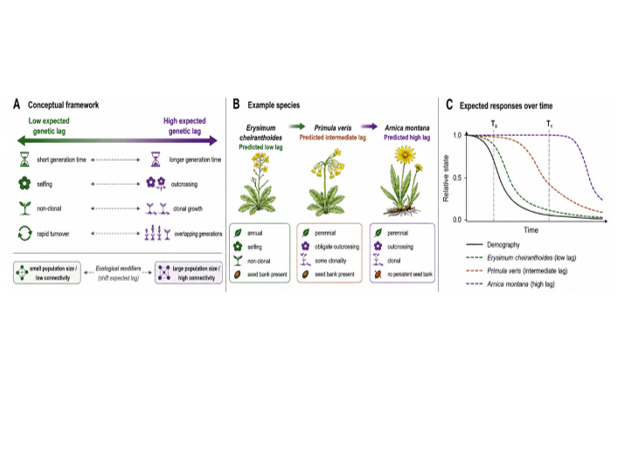

Genetic diversity & population change
Highlighted past, present and future research

Published · Journal of Ecology, 2024
Genomic signatures of past megafrugivore-mediated dispersal in Malagasy palms
Did the long-distance dispersal by Madagascar's extinct giant lemurs and elephant birds leave their mark in the genomes of palms? Palm populations that shared more megafrugivores in the past are still more similar genetically today — a signature of past seed dispersal persisting more than a thousand years after their extinction.

Soon in Molecular Ecology
Contrasting genomic patterns with and without megafaunal seed dispersers in an Afro-Malagasy megafruit palm
What happens to a megafruit palm when its megafaunal seed dispersers disappear? In Madagascar, Hyphaene coriacea populations are more genetically isolated and show no evidence of contemporary long-distance migration, unlike populations in mainland Africa where megafrugivores still persist. The results point to megafauna loss as a driver of reduced population connectivity, while older population declines were more likely shaped by past climate change.

In preparation
Harnessing historical genomes to support applied conservation of genetic diversity
How long does it take for population decline to leave a genetic signature? By comparing historical herbarium specimens with contemporary populations, I investigate how quickly genetic diversity responds to demographic decline, why this genetic lag differs among plant species using different life-history traits, and how accounting for it could improve genetic monitoring and conservation assessments.
Fieldwork
In 2019 I spent three months collecting palm samples across Madagascar with the Kew Madagascar Conservation Centre; with my footage, iDiv made a short film about the expedition.
Published with GitHub Pages